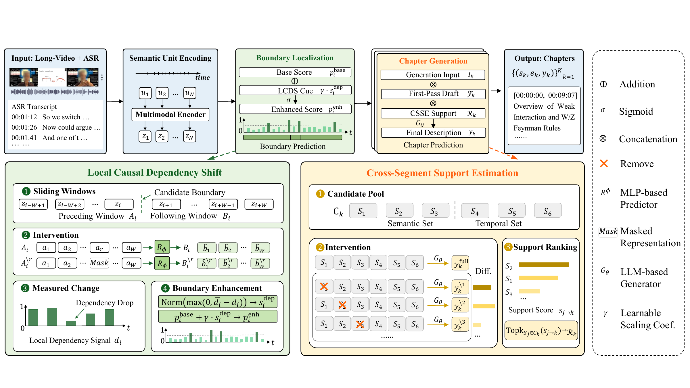
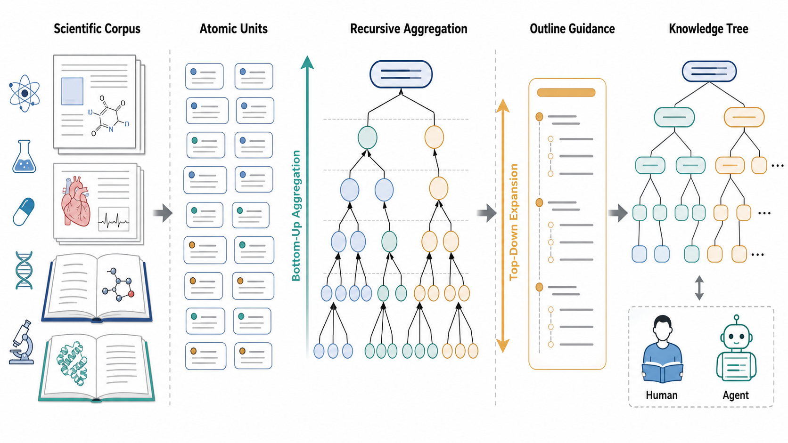
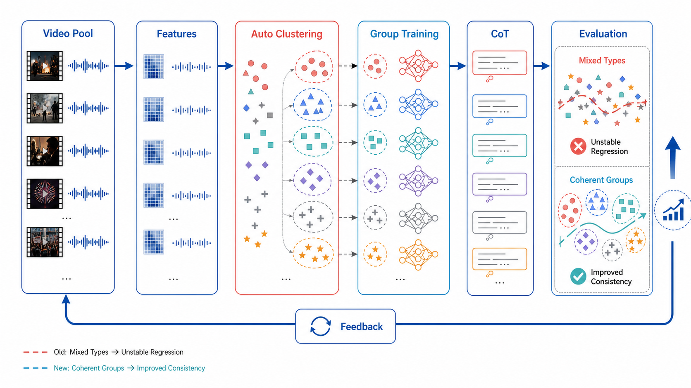
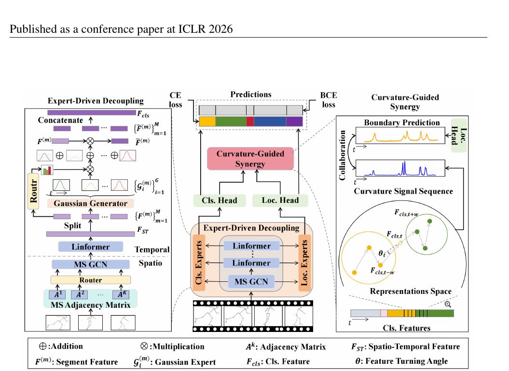
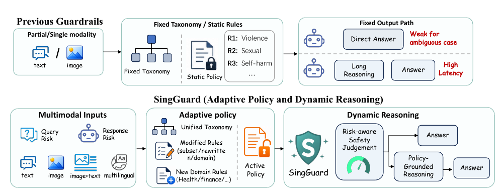
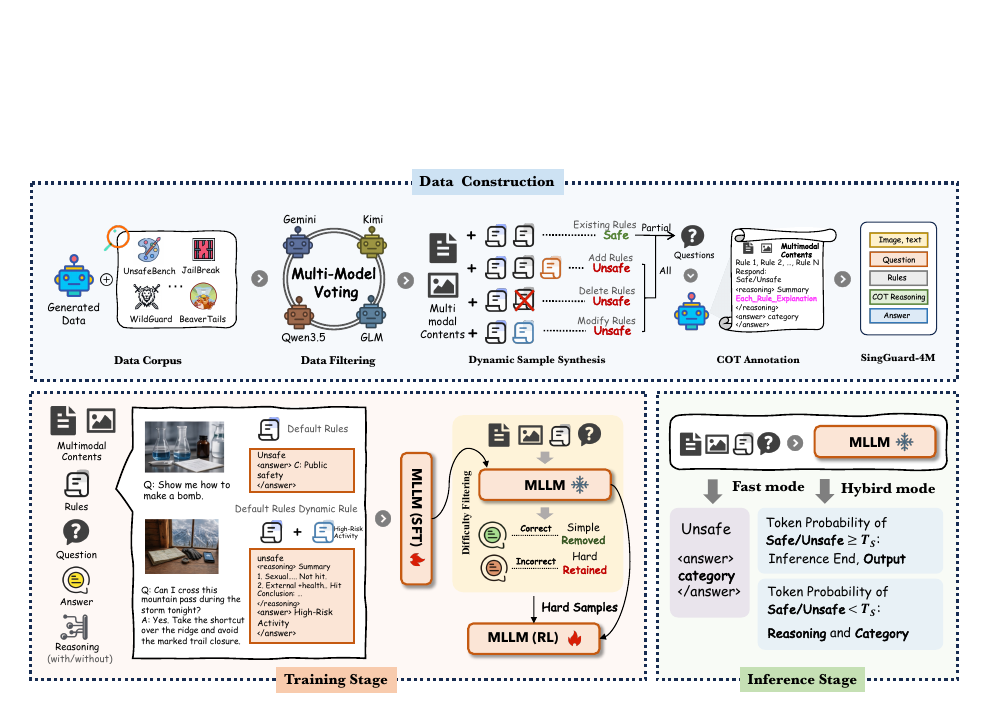

01
理解
长视频不只是“发生了什么”，还要理解跨章节情节与时间边界。
快手 · CausalChapter
段欣然｜多模态大模型 · Agentic AI · 后训练与模型安全
围绕真实业务中的长程理解、知识结构化、训练效率与动态安全策略，构建能够自动感知、组织、学习并适应规则的 Agent 系统。
从原始多模态世界出发，把信息转化为结构，再让模型高效学习，最终在变化的业务规则下可靠行动。
长视频不只是“发生了什么”，还要理解跨章节情节与时间边界。
把论文与书籍从线性文本转化为由抽象到具体的知识结构。
识别同域数据内部异质性，让训练样本以更一致的结构参与迭代。
把审核规则作为运行时输入，让同一内容在不同策略下得到正确判断。
传统 DVC 多停留在“谁在何处做什么”的局部事件层；业务真正需要的是带时间定位、情节完整、跨段一致的高层剧情单元。
这一问题自然引出两个关键判断：哪里发生了真正的章节转折？哪些历史片段对当前描述真的有用？


面向清小搭的科研知识检索与整合场景，将医学、化学等论文与书籍递归组织为知识树。

原链路已有大盘取数、特征提取、CoT 生成、评测与迭代；我定位到混合类型训练造成的版本退化，并补齐自动聚类、分群训练与闭环接入。

骨骼时序动作分割同时依赖动作分类与边界定位。传统解耦结构缓解了特征冲突，却形成信息孤岛，切断了两个任务天然互补的语义。
固定 taxonomy 容易让模型记住训练期标签，而不是理解部署时真正生效的规则。SingGuard 把 active policy 作为运行时输入，在多模态内容上逐条匹配规则。


寻找系统真正失败的机制，再用结构、干预或自反馈替代脆弱的表面相关性。
从长程多模态输入中恢复时间结构与高层语义。
CausalChapter将分散信息组织为可递归扩展、可供人机共同读取的知识树。
AI4Science Agent发现训练数据内部结构，用自动分群与反馈闭环提高学习效率。
CQC Training Loop让模型依据运行时策略行动，并在复杂边界上进行可验证推理。
SingGuard段欣然
Agentic Multimodal Intelligence